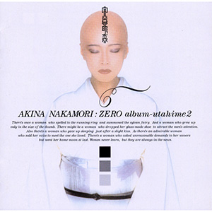

翻唱专辑：第2张
发行年份：2002年
发行日期：3月20日
| 歌名 | 作词 | 作曲 | 编曲 |
|---|---|---|---|
| 歌姫2 Opening | 千住明 | 千住明 | |
| 黄昏のビギン (ちあきなおみ的翻唱曲、原为水原弘的单曲) | 永六輔 | 中村八大 | 千住明 |
| 桃色吐息 (髙橋真梨子的翻唱曲) | 康珍化 | 佐藤隆 | 千住明 |
| アデュー (庄野真代的翻唱曲) | 庄野真代 | 庄野真代 | 千住明 |
| 別れの予感 (テレサ・テン的翻唱曲) | 荒木とよひさ | 三木たかし | 千住明 |
| シングル・アゲイン (竹内まりや的翻唱曲) | 竹内まりや | 竹内まりや | 千住明 |
| 色彩のブルース (EGO-WRAPPIN’的翻唱曲) | 中納良恵 | 森雅樹 & 中納良恵 | 千住明 |
| 秋桜 (山口百恵的翻唱曲) | さだまさし | さだまさし | 千住明 |
| 異邦人 (久保田早紀的翻唱曲) | 久保田早紀 | 久保田早紀 | 千住明 |
| 乙女のワルツ (伊藤咲子的翻唱曲) | 阿久悠 | 三木たかし | 千住明 |
| 瑠璃色の地球 (松田聖子的翻唱曲) | 松本隆 | 平井夏美 | 千住明 |
| 歌姫2 Ending | 千住明 | 千住明 |
首发规格：CD: UMCK-1093
唱片公司：Kitty MME
排行榜：Oricon公信榜专辑周榜第10位（连续2周）
再发行：
2005年7月1日 - 数码下载
2017年5月3日 - UHQCD: UPCH-7264